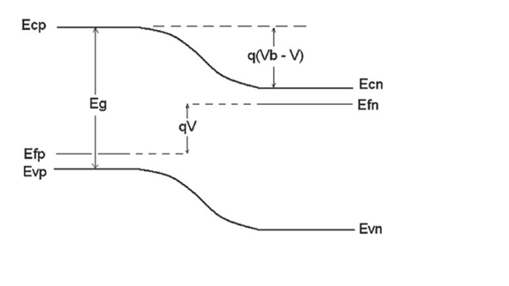
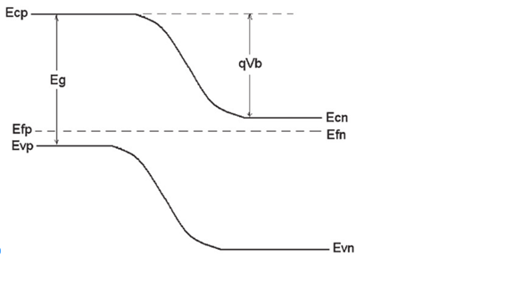

1.1. Diode
1.1.1 다이오드란?
다이오드란 전류를 한쪽 방향으로만 흐르게 하는 반도체 부품입니다.기본적으로 전류의 단방향 스위치의 역할을 하는 반도체 장비라고 할 수 있습니다.
전류가 한 방향으로 쉽게 흐르도록 하지만 반대 방향으로 흐르는 전류는 엄격하게 제한합니다.
다이오드에는 양극과 음극에 의해 결정되는 극성이 있습니다.
대부분의 다이오드는 양극에 양의 전압이 가해질 때만 전류가 흐르도록 합니다.
1.1.2. PN접합 다이오드
두 반도체(p형, n형)의 접합으로 이루어진 다이오드 입니다.두 반도체의 에너지 레벨 차이를 전압으로 조절하여 전류가 흐르는 정도를 조절하는 소자입니다.
기본적으로 두 반도체(p형, n형)의 전자의 농도가 다르기 때문에 에너지 레벨의 차이가 존재합니다. 기본값을 기준으로 차이가 줄어드는 Forward와 차이가 늘어나는 reverse를 구분합니다.
1.1.3 다이오드의 동작
1.1.3.1 Forward bias
Diffusion으로 전자가 이동하기 때문에 다량의 전류가 흐릅니다.
Diffusion에서는 전자가 exp비율로 이동하기 때문에 전류도 exp로 증가합니다.

1.1.3.2 Reverse bias
Drift로 전자가 이동하기 때문에 소량의 전류가 흐릅니다.
reverse bias 상태에서는 일정한 양의 전자가 이동하기 때문에 전류도 일정한 양으로 흐릅니다.

1.1.4. 시뮬레이션 전제조건
위의 시뮬레이션은 비전공생과 관련 지식이 많지 않은 분들에게도 PN 다이오드의 기본동작을 보다 쉽게 이해시키기 위해,
많은 전제조건을 통해서 가장 이상적인 PN 다이오드의 동작을 구현했습니다.
위의 시뮬레이션에 사용된 전제조건은 다음과 같습니다.
2) Maxwell-Boltzmann approximation
3) low level injuction
4) 총 전류는 모든 PN 구조에서 연속이며 일정
5) revese bias는 breakdown voltage만큼 커지지 않는다.
1.1.5. Diode 더 알아보기
1.1.5.1. 농도
p형과 n형 semiconductor의 농도에 따라 동작이 변화합니다.
시뮬레이션에서는 두 semiconductor의 농도가 동일하다는 가정하에 진행했기 때문에 위와 같이 동작합니다.
둘의 농도가 차이가 매우 큰 상태의 PN Juction을 One-Side Juction이라고 합니다.
1.1.5.1. hole
시뮬레이션에서는 홀에 대한 내용이 없습니다. 실질적으로 홀이란 전자가 빠져나간 공간을 의미하기 때문입니다.
그러나 전자의 움직임과 동일한데 전하만 마이너스라고 볼 수 없습니다. 그 이유는 전자와 홀은 effective mass가 다르기 때문입니다.
다른 이유는 전자가 반도체에서 움직일때와 홀이 움직일때 받는 영향이 다르며
홀이 더 움직이기가 어렵고 이를 홀의 effective mass가 무겁다(=덜 움직인다.)로 해석하기 때문입니다.
홀의 정확한 동작과 의미에 대해선 물리학적 지식이 필요하기 때문에 원한다면 더 찾아보시는 걸 추천합니다.